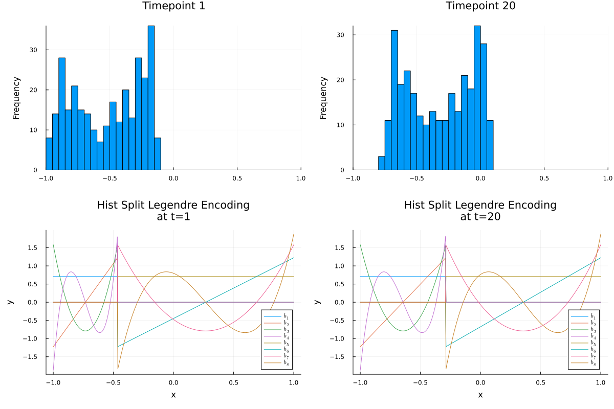
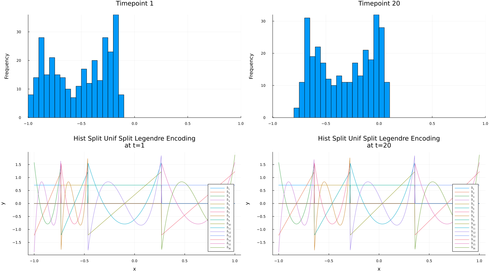

Encodings
Overview
To use MPS methods on time-series data, the continuous time-series amplitudes must be mapped to MPS compatible vectors using an encoding. There are a number of encodings built into this library, and they can be specified by the encoding keyword in MPSOptions.
MPSTime.Encoding — TypeEncodingAbstract supertype of all encodings. To specify an encoding for MPS training, set the encoding keyword when calling MPSOptions.
Example
julia> opts = MPSOptions(; encoding=:Legendre);
julia> W, info, test_states = fitMPS( X_train, y_train, X_test, y_test, opts);Encodings
:Legendre: The first d L2-normalised Legendre Polynomials. Real valued, and supports passingprojected_basis=truetoMPSOptions.:Fourier: Complex valued Fourier coefficients. Supports passingprojected_basis=truetoMPSOptions.
\[ \Phi(x; d) = \left[1. + 0i, e^{i \pi x}, e^{-i \pi x}, e^{2i \pi x}, e^{-2i \pi x}, \ldots \right] / \sqrt{d} \]
:Stoudenmire: The original complex valued "Spin-1/2" encoding from Stoudenmire & Schwab, 2017 arXiv. Only supports d = 2
\[ \Phi(x) = \left[ e^{3 i \pi x / 2} \cos(\frac{\pi}{2} x), e^{-3 i \pi x / 2} \sin(\frac{\pi}{2} x)\right]\]
:Sahand_Legendre_Time_Dependent: (:SLTD) A custom, real-valued encoding constructed as a data-driven adaptation of the Legendre Polynomials. At each time point, $t$, the training data is used to construct a probability density function that describes the distribution of the time-series amplitude $x_t$. This is the first basis function.$b_1(x; t) = \text{pdf}_{x_t}(x_t)$. This is computed with KernelDensity.jl:
julia> Using KernelDensity
julia> xs_samps = range(-1,1, max(200,size(X_train,2)))
julia> b1(xs,t) = pdf(kde(X_train[t,:]), xs_samps)The second basis function is the first order polynomial that is L2-orthogonal to this pdf on the interval [-1,1].
\[b_2(x;t) = a_1 x + a_0 \text{ where } \int_{-1}^1 b_1(x;t) b_2^*(x; t) \textrm{d} x = 0, \ \lvert\lvert b_2(x; t) \rvert\rvert_{L2} = 1\]
The third basis function is the second order polynomial that is L2-orthogonal to the first two basis functions on [-1,1], etc.
-:Custom: For use with user-defined custom bases. See function_basis
Encodings can be visualsed with the plot_encoding function.
basis, p = plot_encoding(:legendre, 4)
For data driven bases, the data histograms can be plotted alongside for reference:
basis, p = plot_encoding(:sahand_legendre_time_dependent, 4, X_train; tis=[1,20]); # X_train is taken from the noisy trendy sine demo in the Imputation section
Using a SplitBasis encoding
One way to increase the encoding dimension is to repeat a basis many times across the encoding domain in 'bins'. In theory, this can be advantageous when data is concentrated in narrow regions in the encoding domain, as very fine bins can be used to reduce encoding error in well-populated regions, while computational effort can be saved with wide bins in sparsely-population regions. To this end, we provide the "Split" bases.
The uniform-split encoding, which simply bins data up as a proof of concept:
basis, p = plot_encoding(uniform_split(:legendre), 8, X_train; tis=[1,20], aux_basis_dim=4);
And the histogram-split encoding, which narrows the bins in frequently occuring regions.
basis, p = plot_encoding(histogram_split(:legendre), 8, X_train; tis=[1,20], aux_basis_dim=4);
Every data-independent encoding can be histogram split and uniform split, including other split bases:
basis, p = plot_encoding(histogram_split(uniform_split(:legendre)), 16, X_train; tis=[1,20], aux_basis_dim=8, size=(1600,900));
Custom encodings
Custom encodings can be declared using function_basis.
MPSTime.function_basis — Functionfunction_basis(basis::Function, is_complex::Bool, range::Tuple{<:Real,<:Real}, <args>; name::String="Custom")Constructs a time-(in)dependent encoding from the function basis, which is either real or complex, and has support on the interval range.
For a time independent basis, the input function must have the signature :
basis(x::Float64, d::Integer, init_args...)and return a d-dimensional numerical Vector. A vector $[x_1, x_2, x_3, ..., x_N]$ will be encoded as $[b(x_1), b(x_2), b(x_3),..., b(x_N)]$
To use a time dependent basis, set is_time_dependent to true. The input function must have the signature
basis(x::Float64, d::Integer, ti::Int, init_args...)and return a d-dimensional numerical Vector. A vector $[x_1, x_2, x_3, ..., x_N]$ will be encoded as $[b_1(x_1), b_2(x_2), b_3(x_3),..., b_N(x_N)]$
Optional Arguments
is_time_dependent::Bool=false: Whether the basis is time dependentis_data_driven::Bool=false: Whether functional form of the basis depends on the training datainit::Function=no_init: The initialiser function for the basis. This is used to compute arguments for the function that are not known in advance,
for example, the polynomial coefficients for the Sahand-Legendre basis. This function should have the form
init_args = opts.encoding.init(X_normalised::AbstractMatrix, y::AbstractVector; opts::MPSTime.Options=opts)X_normalised will be preprocessed (with sigmoid transform and MinMax transform pre-applied), with Time series as columns
Example
The Legendre Polynomial Basis:
julia> Using LegendrePolynomials
julia> function legendre_encode(x::Float64, d::Int)
# default legendre encoding: choose the first n-1 legendre polynomials
leg_basis = [Pl(x, i; norm = Val(:normalized)) for i in 0:(d-1)]
return leg_basis
julia> custom_basis = function_basis(legendre_encode, false, (-1., 1.))To use a custom encoding, you must manually pass it into fitMPS.
encoding = function_basis(...)
fitMPS(X_train, y_train, X_test, y_test, MPSOptions(; encoding=:Custom), encoding)MPSTime.plot_encoding — Methodplot_encoding(E::Union(Symbol, MPSTime.Encoding),
d::Integer,
X_train::Matrix{Float64}=zeros(0,0),
y_train::Vector{Any}=[];
<keyword arguments>) -> encoding::Vector, plot::Plots.PlotPlot the first d terms of the encoding E across its entire domain.
X_train and y_train are only needed if E is data driven or time dependent, or plot_hist is true.
Keyword Arguments
plot_hist::Bool=E.isdatadriven: Whether to plot the histogram of the traing data at several time points. Useful for understanding the behviour of data-driven bases.tis::Vector{<:Integer} = Int[]: Time(s) to plot the Encoding at.ds::Vector{<:Integer} = collect(1:d): Enables plotting of a subset of a d-dimensional Encoding, e.g.ds=[1,3,5]plots the first, third and fifth basis functions.num_xvals::Integer=500:size::Tuple=(1200, 800):padding::Real=6.:
Used for data-driven Encodings
sigmoid_transform::Bool=false: Whether to apply a robust sigmoid transform to the training data, seeMPSOptionsminmax::Bool=true: Whether to apply a minmax normalsation to the training data after the sigmoid, seeMPSOptionsdata_bounds::Tuple{<:Real, <:Real}=(0.,1.): Whether to apply a robust sigmoid transform to the X data, seeMPSOptionsproject_basis::Bool=false: Whether to project the basis onto the data. Supported only by :legendre and :Fourier basis whenEhas type Symbolaux_basis_dim::Integer=2: Dimension of each auxilliary basis. Only relevent whenEis aMPSTime.SplitBasis.
Misc
kwargs: Passed to Plots.Plot()